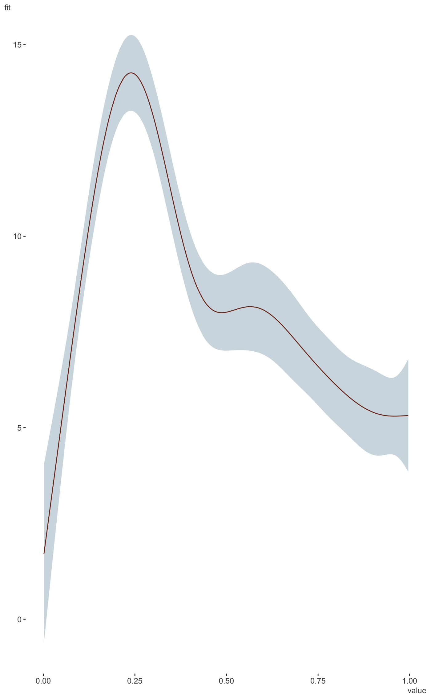
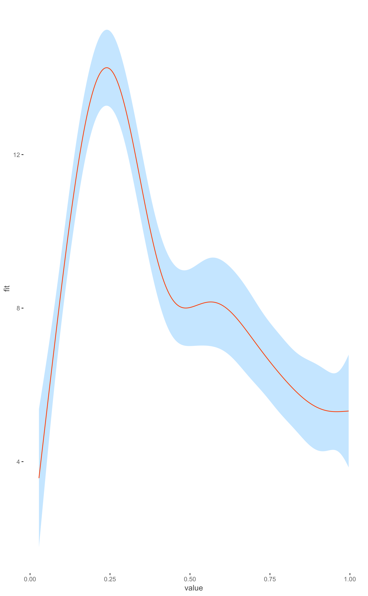
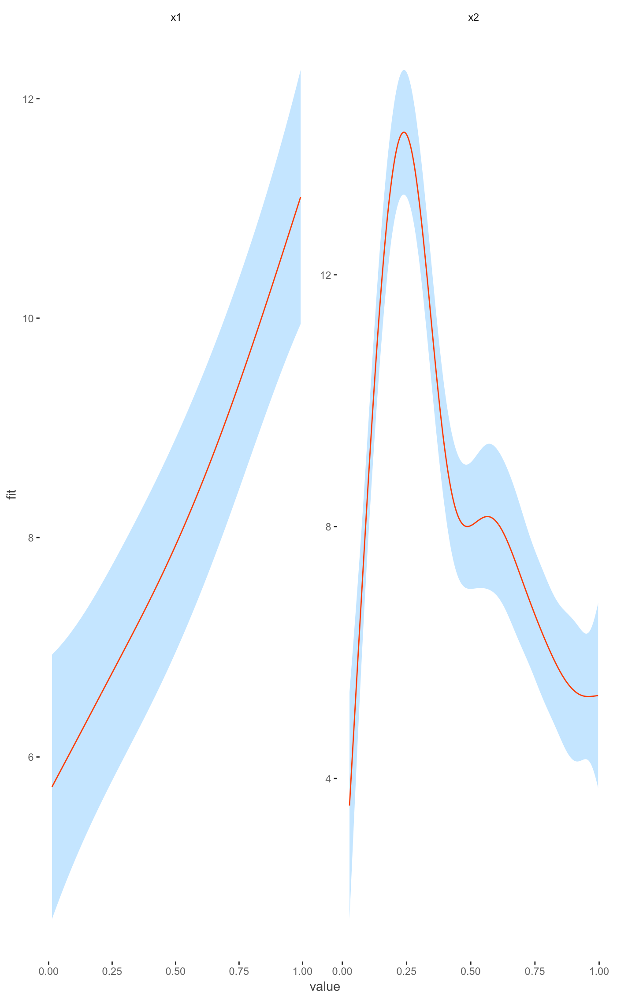
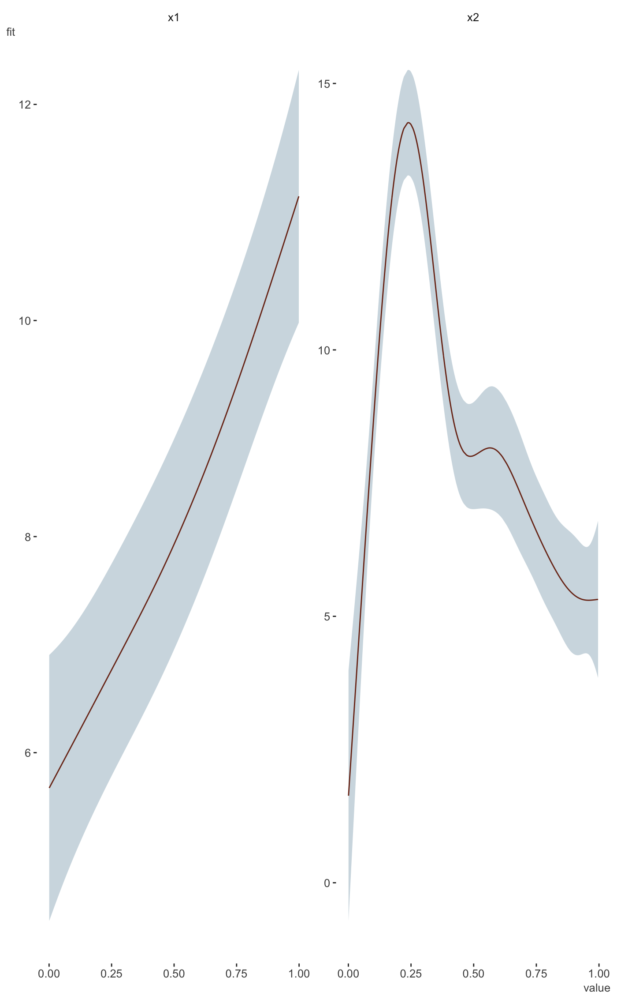

Plot 1d effects from mgcv gam model results.
plot_gam(model, main_var, conditional_data = NULL, line_color = "#ff5500", ribbon_color = "#00aaff40", ncol = NULL, nrow = NULL) plot_gam_1d(model, model_data, main_var, conditional_data = NULL, line_color = "#ff5500", ribbon_color = "#00aaff") plot_gam_multi1d(model, model_data, main_var, conditional_data = NULL, line_color = "#ff5500", ribbon_color = "#00aaff", ncol = ncol, nrow = nrow)
| model | The mgcv GAM. |
|---|---|
| main_var | Which variable do you want to plot? Uses bare variable names
and can take multiple variables via |
| conditional_data | This is the same as the newdata argument for predict. Supply a data frame with desired values of the model covariates. |
| line_color | The color of the fitted line. |
| ribbon_color | The color of the uncertainty interval around the line. |
| ncol | If plotting multiple smooths, these are passed to facet_wrap. |
| nrow | If plotting multiple smooths, these are passed to facet_wrap. |
| model_data | The data used to do the GAM. |
a ggplot2 object of the effects of main_var.
This function is very 'no-frills' and in its early stages at the moment. Only 1d or multiple 1d numeric smooths are able to be plotted, and nothing using categorical variables (e.g. 'by'). If conditional data is not supplied, it will be created by create_prediction_data, i.e. defaults to means for numeric, most common category for categorical variables, and 500 observations.
library(mgcv) # you don't need this function if you don't have this package library(dplyr) # example taken from the mgcv plot.gam help file. set.seed(0) ## fake some data... f1 <- function(x) { exp(2 * x) } f2 <- function(x) { 0.2 * x ^ 11 * (10 * (1 - x)) ^ 6 + 10 * (10 * x) ^ 3 * (1 - x) ^ 10 } f3 <- function(x) { x * 0 } n <- 200 sig2 <- 4 d = data_frame( x0 = rep(1:4, 50), x1 = runif(n, 0, 1), x2 = runif(n, 0, 1), x3 = runif(n, 0, 1), e = rnorm(n, 0, sqrt(sig2)), y = 2 * x0 + f1(x1) + f2(x2) + f3(x3) + e ) %>% mutate(x0 = factor(x0)) b <- gam(y ~ x0 + s(x1) + s(x2) + s(x3), data = d) library(visibly) plot_gam(b, conditional_data = data_frame(x2 = runif(500)), main_var = x2)plot_gam(b, main_var = x2)plot_gam(b, conditional_data = data_frame(x1 = runif(500), x2 = runif(500)), main_var = vars(x2, x1))# compare with mgcv plot plot(b, pages=1)